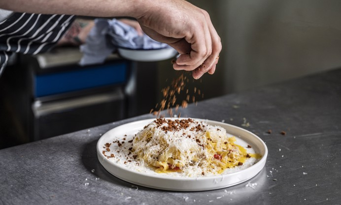

Fennel & Chorizo Tagliatelle

This recipe is a great weeknight comforter which uses a few simple ingredients for one indulgent and tasty pasta treat! The star of the show is really the fennel and we want to try and bring out that anisead flavour as much as possible. Most of the ingredients you should be able to get from your regular supermarket but the fennel might require a trip to your nearest green grocers!
For the pasta I generally use fresh tagliatelle however any long pasta, such as linguine or spaghetti will suit this dish nicely. Should you choose to use dried pasta take care when adding pasta water as there will not be the same startch content and so the sauce could turn out runny.
Ingredients:
Serves 4
- Fennel 4 bulbs
- Mascarpone 250g
- Shallots x2
- Red Chilli x1
- Tomato Puree 2tbsps
- Chorizo 175g
- Medium Dry Sherry 50ml
- Tagliatelle 400g
Instructions
- Remove the skin of the chorizo and rip into small pieces then add to a dry large frying pan
- Once cooked and crispy remove the chorizo from the pan but leave the oil from the chorizo (this will give some flavoured oil for us to cook our shallots in)
- Dice the shallot and add to a pan with the leftover chorizo oil and allow to cook until soft (top up with olive or veg oil if there is too little oil from the chorizo
- Juilien the fennel (this just means slice it into thin strips) and add to the pan, allowing to cook for roughly 5 minutes
- At this point start to cook your pasta if using dry
- Add the tomato paste
- Let this cook for a further 8-10 minutes
- Now add the sherry and again allow to cook for roughly a minute to let the alcohol burn off
- Add the mascarpone and start tomix through
- At this point stick your fresh pasta on if using fresh
- Add some pasta water to the sauce until thee consistency you want is achieved
- Drain the pasta and add to the sauce, mix until the pasta is coated and then serve with the chorizo from earlier garnished on top along with some parmisan and black pepper